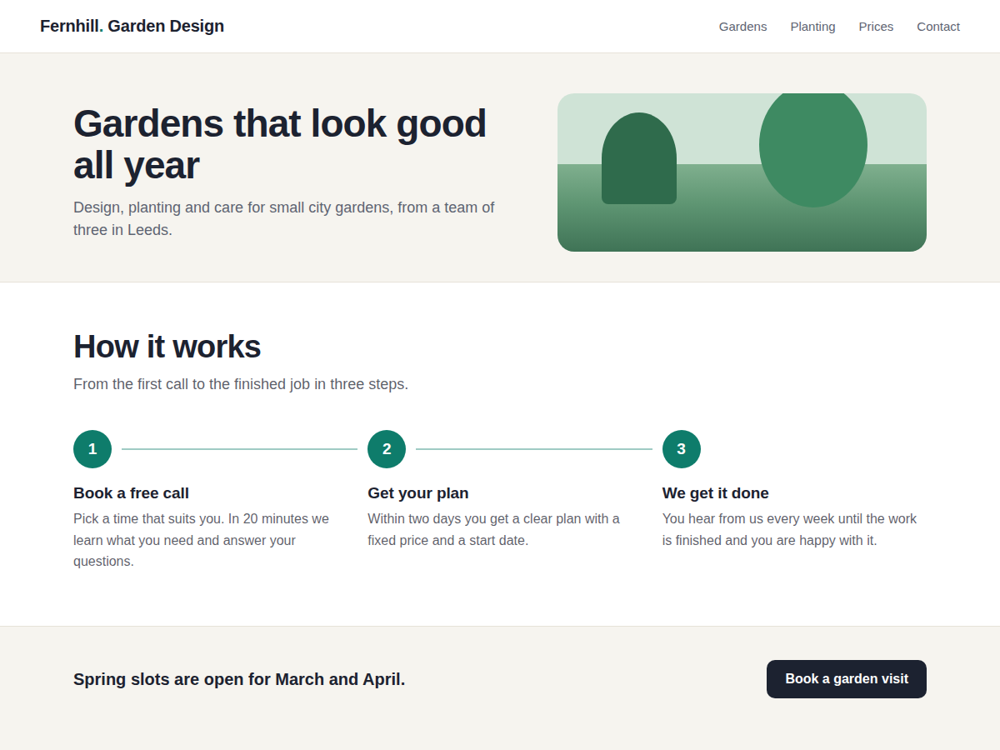

Stepwell
Show how it works in clear numbered steps
- Looks finished before you change a thing
- Side by side or one below the other
- Stacks neatly on phones and narrow columns
- Steps are page text search engines read

What it does
Most service pages need the same section: how it works. Book a call, get a quote, we do the job. Stepwell turns that into a row of numbered steps joined by a line, so a visitor sees the whole process at a glance and knows what happens after they get in touch.
It looks finished the moment it lands on the page: a heading, a short line under it and three sample steps in your site's font. In the editor you click the widget and open Settings, where each step has a title and a short text. You can add, remove and reorder steps, and the widget changes as you type.
Steps sit side by side or one below the other, as plain text or on cards, with round or square number badges and a solid line between them. On phones and in narrow columns they stack neatly with the line running down the side. The steps are ordinary page text in a numbered list, so screen readers and search engines read them.
The free plan shows up to 4 steps per widget, with no branding. Premium allows up to 20 steps, an icon in place of each number, a link under each step, "or" choices that share one number (visit us, or a video call), dashed, dotted or arrow lines, and steps that appear one by one as the visitor scrolls.
Price
Free
- Up to 4 steps per widget
- Side by side or stacked layout
- Colours, font, cards or plain
- No branding on your site
Premium
$4/month, $36/year ($3/month billed yearly)
- Up to 20 steps per widget
- Icons and a link on each step
- Or-choices that share a number
- Line styles and scroll animation